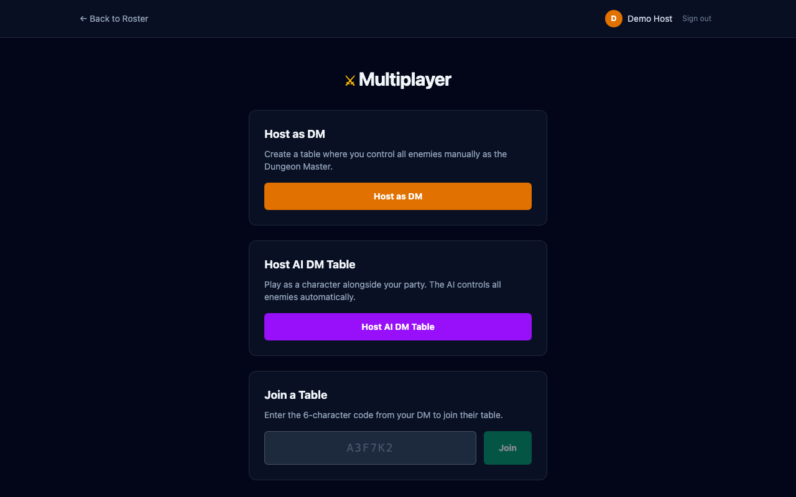
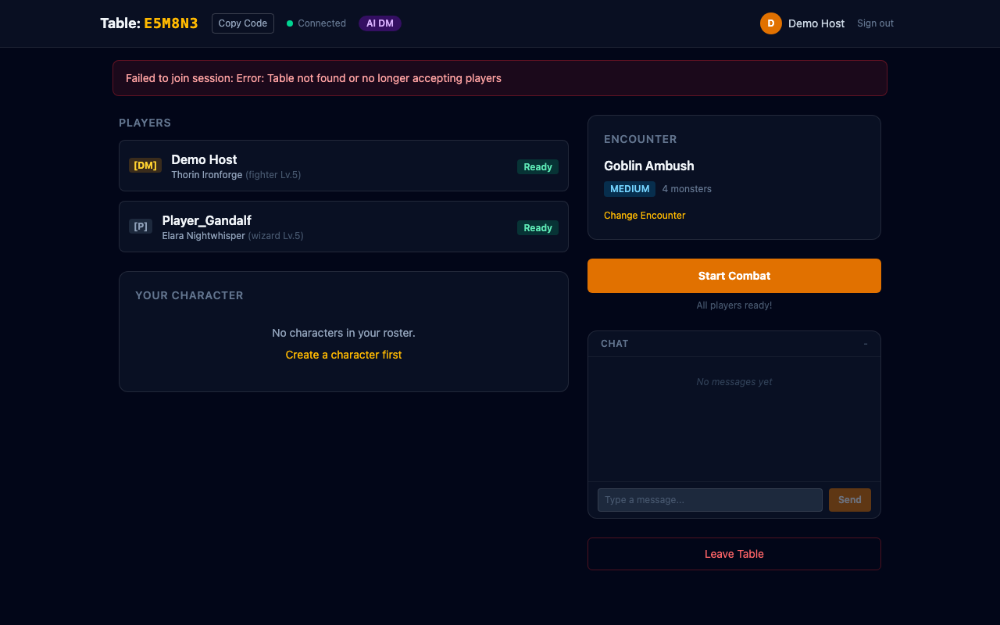
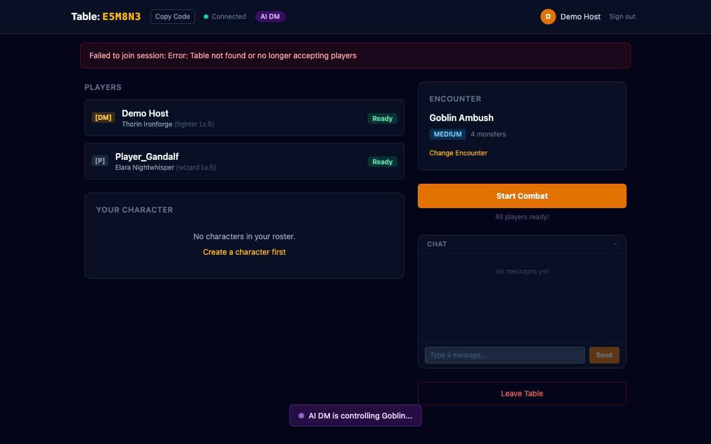

Feature branch: feat/ai-dm-mode | Closes #66
A party of human players can now play multiplayer combat without a human DM. The AI controls all enemy units automatically using the existing decideAction engine, with a 750ms delay between turns so players can follow the action.
The multiplayer page now has three options: "Host as DM" (amber, existing), "Host AI DM Table" (purple, new), and "Join a Table". The AI DM option creates a session where the host plays as a character instead of controlling enemies.

In AI DM mode, the host sees character selection and ready-up controls just like other players. They retain host privileges (encounter selection, start combat) but don't take the DM role for enemy control.

During enemy turns in AI DM mode, a purple indicator shows "AI DM is controlling [enemy name]..." with a pulsing dot. The DmActionPanel is hidden since the AI handles all enemy decisions.

dmMode: 'human' | 'ai' — tracked in multiplayerStore, synced to all clientsrunAITurn(unitId) — reusable AI turn logic from disconnect handlerrunAIEnemyTurnsIfNeeded() — auto-chains consecutive enemy turns with 750ms delayisMyTurn logic updated so host only acts during their own character's turn